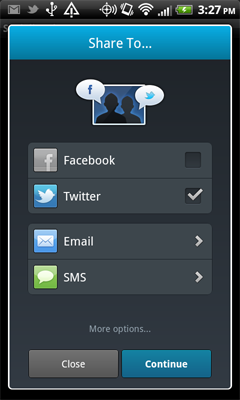
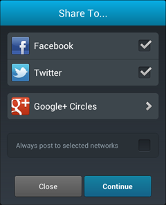

What’s New¶
In this version (v2.9)¶
Pinterest!¶
Our demo app and our docs now include examples of sharing to Pinterest using Socialize.
Refer to Sharing to Pinterest for more details.
v2.8¶
IMPORTANT NOTE FOR USERS UPGRADING¶
If you are currently using an earlier version of Socialize (before v2.8) you will notice we no longer distribute a JAR file.
YOU MUST DELETE THE EXISTING socialize-xxx.jar FILE before importing the new version.
In addition, a new activity definition is required in your AndroidManifest.xml for Facebook. Please refer to the getting started guide for more detail
Facebook SDK v3.0¶
Facebook recently published a new version of their SDK which represents a complete overhaul of their previous SDK. v2.8 of Socialize incorporates this new version of the Facebook SDK
Performance Improvements¶
The comment list view has undergone some tweaking to improve performance on Android 4.x devices.
v2.7¶
Support for Google Cloud Messaging¶
With the deprecation by Google of the current “C2DM” framework Socialize has built and tested the required changes to support the newer Google Cloud Messaging (GCM) system.
Note
If you are upgrading an existing Socialize implementation you MUST add some new permissions to support Google’s new Cloud Messaging system!
Refer to SmartAlerts (Push Notifications) for more details.
Localization!¶
After many many requests we are happy to announce we now support localization! You can now completely customize the UI in Socialize with alternate languages via standard Android localization.
Refer to Localization for more details.
v2.5¶
Deep Linking¶
Socialize for Android now supports “Deep Linking”. This is a process whereby URLs that are published to the web, when clicked from a mobile device will take the user into your app and take them directly to the content referred to in the link.
Refer to Deep Linking for more details.
v2.4¶
Customization of Authentication Behavior¶
Developers now have greater control over how Socialize handles requests for authentication from end users.
Refer to Customizing Authentication Behavior for more details.
Customization of Sharing Behavior¶
Developers now have greater control over how Socialize handles requests for sharing from end users.
Refer to Customizing Sharing Behavior for more details.
v2.3¶
Popular Content¶
With the release of v2.3 we are adding a new feature to enable you to retrieve entities ordered by popularity. Popularity is determined by the number of social actions performed on an entity (Comments, Likes and Shares).
Refer to Retrieving Popular Entities for more details.
Facebook Open Graph Likes¶
Socialize now supports Facebook Open Graph “likes”. When a user who is authenticated with Facebook posts a like using Socialize we can automatically post this to the user’s activity stream on Facebook as a Facebook Open Graph Like.
Open Graph can significantly improve the visibility of posts made to Facebook and through the Socialize SmartDownload system can in-turn greatly improve visibility and downloads of your app.
Refer to Using Facebook Open Graph for more information.
IMPORTANT NOTE FOR FACEBOOK INTEGRATION¶
Facebook is now supporting “deep linking” into your app from links posted to Facebook. This means that end users who see a post from your app on their wall are taken immediately to the Google Play store for your app if they do not already have the app installed. This process will bypass the Socialize SmartDownload feature (which serves the same purpose) however if SmartDownloads are bypassed you will not benefit from any of the analytics tracking or referral optimization done by the SmartDownload process. Thus we recommend you ensure that Android Native Deep Linking is DISABLED on your Facebook application

More customization options for the Action Bar¶
We have added a bunch of additional configuration options for the ActionBar that allows greater control over the look-and-feel of the ActionBar.
You now have complete control over colors and positioning of the ActionBar within your app.
Refer to the Customizing the Action Bar section for more details.
Google+ Sharing¶
In this release we are introducing support for sharing to Google+ from the default Share Dialog
v2.2¶

|
Important Information!
|
v2.1.1 adds support for the deprecation of the offline_access permission of Facebook applications (https://developers.facebook.com/roadmap/offline-access-removal).
This means developers upgrading to Socialize v2.2+ MUST IMPLEMENT THE SOCIALIZE LIFECYCLE correctly in their app.
Refer to the Socialize Lifecycle section for more details.
v2.1¶
In v2.1 we introduced a range of new features around the sharing of photos.
You can now share photos directly to a user’s Facebook wall, or to their Twitter feed
Check out Advanced Facebook or Advanced Twitter for more details.
v2.0¶
v2.0 of the Socialize SDK represents a major improvement over previous releases in both easy of use and stability.
In this new release we are introducing several new features and bug fixes as well as a complete reworking of the core interfaces needed to access the entire range of Socialize services.
Note
Backwards Compatibility
In this new version we have tried to make the developer interfaces to Socialize as simple as possible and whilst we have done our best to ensure backwards compatibility with older versions some incompatibilities may exist.
If you are already using an older version of Socialize we STRONGLY RECOMMEND that any calls to deprecated methods be replaced with their non-deprecated counterparts.
Looking Good!¶
We have re-designed the Share Dialog to bring it more in line with end user expectations and to make the job of the developer (you) easier
This new dialog is also completely customizable
|  |  |
Take a look at the Custom Share Dialog section for more details on customizing the share dialog.
Complete Control¶
In this new version we have completely rewritten the top level interfaces exposed to the developer to make them simpler and more powerful.
Developers can now access a set of utility classes that provide access to the entire suite of Socialize features.
Head over to the Socialize Core SDK Guide section for detailed descriptions and code samples
- ShareUtils
- Access all sharing functions and UIs to enable sharing to Facebook, Twitter, Email and SMS.
- CommentUtils
- Create and retrieve comments as well as access to the packaged UIs for commenting.
- UserUtils
- Access to all things User including User Settings and User Profile screens.
- LikeUtils
- Simplified access to allow your users to Like content in your app.
- EntityUtils
- Complete control over the creation and management of entities in your app.
- ActionUtils
- Display all activity occurring in your app at the User, Entity and Application level.
- ViewUtils
- Track and report on the behavior of users within your app by creating Socialize Views.
The SDK also includes several helper classes to make life easier.
- ActionBarUtils
- Quickly and easily render the Socialize Action Bar
- LocationUtils
- Simple and easy access to location services on the device.
- ConfigUtils
- Programmatic access to the global Socialize config (socialize.properties)
New Sample App!¶
To show case these new features and to provide developers with concrete examples of how to use the new library we have created a completely new sample app.
The new sample app is located in the same place as always, the /sample directory of the SDK download.
Socialize is now an Android Library Project¶
Socialize was previously distributed as a single “jar” file with all external resources (images etc) embedded within the JAR. This has become increasingly difficult to maintain and has also caused several performance issues so as of v2.8 Socialize will now be distributed as an Android Library Project.